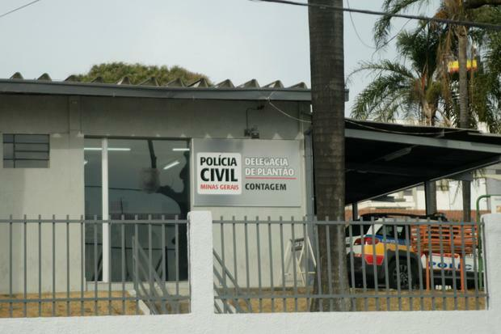

Um homem, de 40 anos, foi morto na madrugada desta sexta-feira (20), no bairro Riacho, em
Contagem, na região metropolitana de Belo Horizonte, durante tentativa de assalto.
Nenhum suspeito do crime foi preso ou identificado até o momento.
A companheira da vítima relatou aos policiais que ambos estavam confraternizando com amigos
em uma boate, no Eldorado. Ao voltarem no carro deles para casa, no bairro Riacho, foram
surpreendidos por dois homens que gritaram: “perdeu, perdeu, perdeu.”
Nesse instante, a vítima teria pedido para pegar os seus pertences no carro, quando teria
feito um movimento de levar a mão na cintura. Com isso, um dos homens disparou três vezes
contra a cabeça dele. Em seguida, os dois homens fugiram correndo.
A mulher relatou ainda que ligou para o SAMU e foi orientada a fazer manobras para
ressuscitação do companheiro, mas este não resistiu.
A vítima não tinha passagens pela polícia. Com ela, não foram encontrados nem documentos nem
celular.Também não foram encontrados projéteis no chão.
Ao ser questionada sobre o modelo do aparelho telefônico do companheiro, a mulher não soube
especificar qual era. Também não soube descrever características dos autores.
A ocorrência foi encaminhada para a Delegacia de Plantão de Contagem.
20/08/21 - 15h21 - Veja a reportagem original clicando aqui.